Hi, I'm Foobie — your sassy monthly reminder to check ’em.
Breast health & early detection
A monthly reminder to do your breast self-exam — because catching a change early starts with knowing what's normal for you.
Feel It on the First
Know your normal.
Step by step
Same time each month, ideally a few days after your period ends — when tissue is least tender. If you don't menstruate, pick a date you'll remember. Like the 1st.
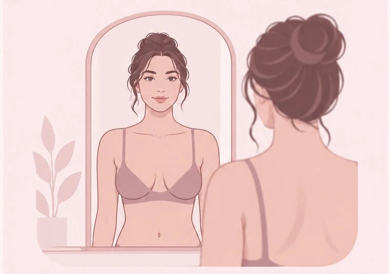
With your arms relaxed at your sides, look for changes in size, shape, swelling, skin texture, or nipple changes.
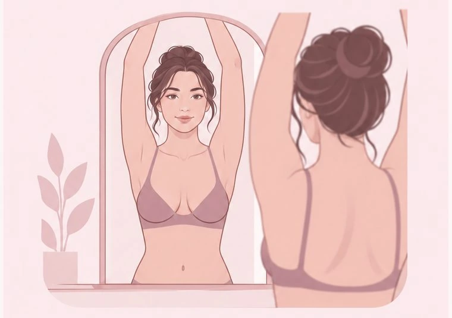
Lift both arms overhead and look again for dimpling, puckering, pulling, swelling, or changes around the nipples.
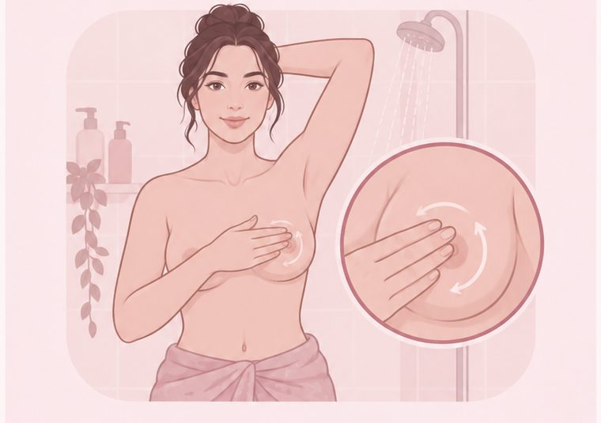
Using the pads of your 3 middle fingers, move in small circles with light, medium, and firm pressure. Cover the whole area — from your collarbone down to the bottom of your ribs, and out into the underarm.
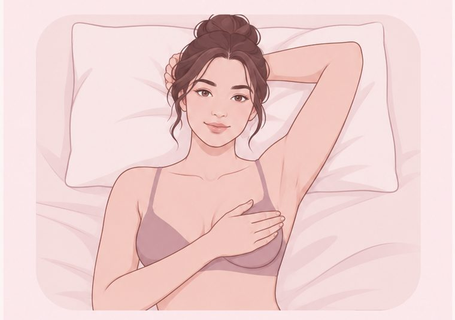
Lie down with one arm behind your head. Use the opposite hand to cover the same area — collarbone to ribs, and into the underarm — then repeat on the other side.
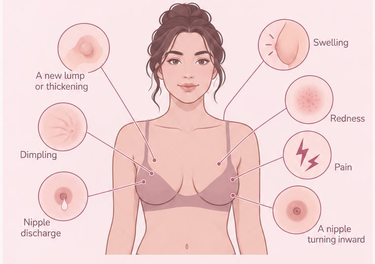
Look for a new lump, thickening, swelling, dimpling, redness, nipple discharge, pain, or a nipple turning inward. Anything new that persists is worth a call to your doctor.
This is general education, not medical advice. If something concerns you, contact a healthcare provider — don't wait for the 1st to come around again. Self-checks supplement screening; they don't replace mammograms or a clinical exam.
A repeating reminder on the 1st of every month, so you never have to remember on your own.
On iPhone the file opens straight into your Calendar app. On Android you may need to tap the downloaded file to import it.
Know your normalso you can notice when something changes
Self-checks don't replace mammograms or a doctor's exam. They help you notice when something has changed.
Figures: American Cancer Society and NCI SEER data. "Relative survival" compares people with the diagnosis to the general population; individual outcomes vary.
Per Mayo Clinic, these are the changes worth paying attention to:
Cancerous lumps often feel firm, irregular, and fixed in place — but feel alone can't confirm anything. Any new or unusual change is worth a call to your doctor.
If you are facing mastectomy, these are the main paths people choose between. Which are available to you depends on your anatomy, your treatment plan, and any previous surgery — a plastic surgeon can tell you which apply.
There is no deadline. Reconstruction can begin during the mastectomy itself, or months or even years afterwards. Choosing to wait is a normal choice, not a missed opportunity, and some people prefer to decide once treatment is behind them. If radiation is part of your plan it often shapes the timing: radiation can cause healing problems in a reconstructed breast, so tissue reconstruction is usually left until afterwards, while implant reconstruction is often still possible. Radiation to the chest in the past can rule implants out altogether. Worth asking your team how radiation fits your plan before settling on a method.
This is general education, not medical advice, and it doesn't cover the risks and recovery of each option. Those are conversations to have with your surgical team.
Compiled from National Cancer Institute, American Cancer Society and American Society of Plastic Surgeons patient information.
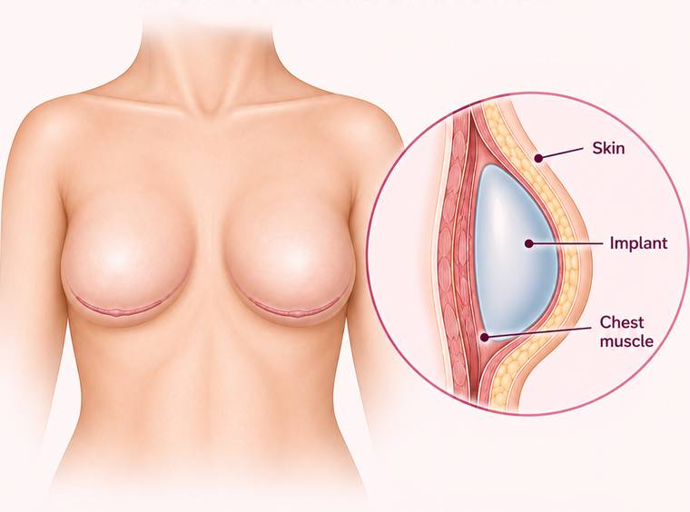
An implant is placed at the same time as the mastectomy, so the breast mound is rebuilt in one operation rather than two. Depending on the plan, the implant may sit above or below the chest muscle. Above it, a supportive mesh or tissue matrix usually holds the implant in position and the muscle is left undisturbed; below it, the muscle covers the implant but has to be lifted to make room. This route needs enough healthy skin left after the mastectomy to cover an implant straight away. Further refinements are still common afterwards.
Sources: American Society of Plastic Surgeons; National Cancer Institute; American Cancer Society.
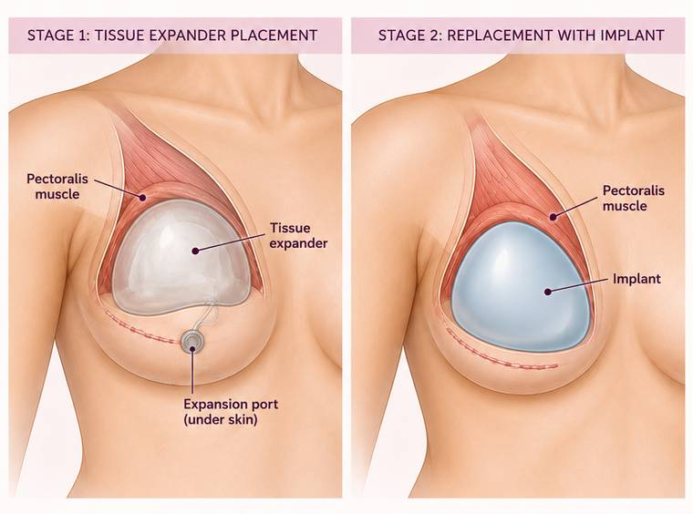
A temporary expander is placed first, then filled gradually through a small port, usually with saline and at visits every week or so. Some newer expanders use air instead and can be filled at home, which cuts down the trips. Where the expander sits determines what has to stretch: under the chest muscle it stretches the muscle as well as the skin, while over the muscle it stretches skin alone, usually with a supportive mesh or tissue matrix placed around it. The chest is typically ready two to six months later, when a second, shorter operation swaps the expander for a permanent implant.
Sources: American Society of Plastic Surgeons; National Cancer Institute; American Cancer Society.
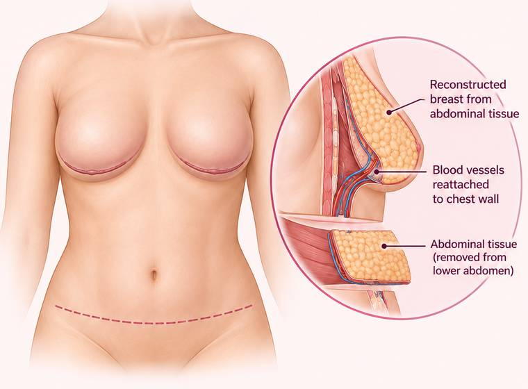
Deep inferior epigastric perforator flap. Uses skin and fat from the lower abdomen while sparing the rectus abdominis muscle. The small vessels supplying the tissue are dissected out through the muscle, then reconnected to vessels in the chest under a microscope. Because the muscle is preserved, there is a lower risk of abdominal weakness than with a TRAM flap.
Sources: American Society of Plastic Surgeons; National Cancer Institute; American Cancer Society.
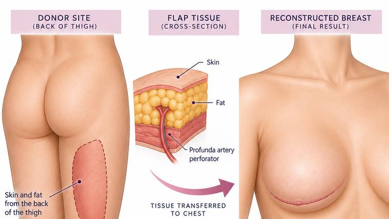
Profunda artery perforator flap. Uses skin and fat from the back of the upper thigh, supplied by perforating vessels from the profunda femoris artery. No muscle is taken, so it is considered muscle-sparing. The scar is usually hidden in the crease between the lower buttock and upper thigh. For a larger breast it may be combined with an implant or another flap.
Sources: American Society of Plastic Surgeons; National Cancer Institute; American Cancer Society.
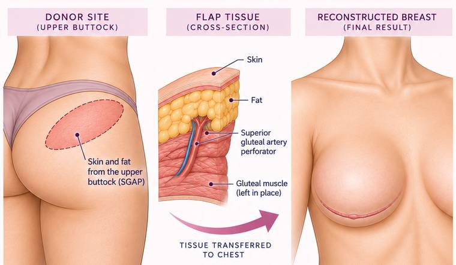
Superior gluteal artery perforator flap. Uses skin and fat from the upper buttock, sparing the gluteal muscle. An option when abdominal tissue isn't available or preferred. Best suited to small or medium volume breasts; for a larger breast it may be combined with an implant or another flap.
Sources: American Society of Plastic Surgeons; National Cancer Institute; American Cancer Society.
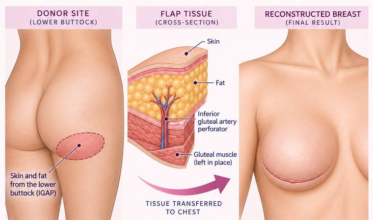
Inferior gluteal artery perforator flap. Similar to SGAP but takes tissue from the lower buttock near the crease, sparing the gluteal muscle. The ASPS notes it is used less often than SGAP because the scar ends up near the area you sit on. For a larger breast it may be combined with an implant or another flap.
Sources: American Society of Plastic Surgeons; National Cancer Institute; American Cancer Society.
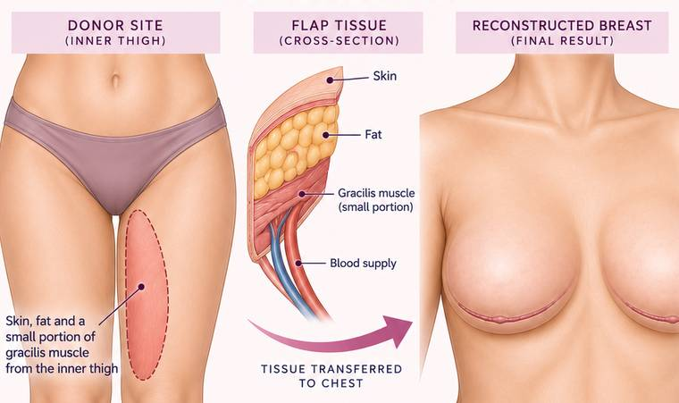
Transverse upper gracilis flap — one of the gracilis-based flaps, named for the direction of the thigh incision (the vertical and diagonal versions are called VUG and DUG). Uses skin, fat, muscle and blood vessels from the upper inner thigh. The gracilis muscle helps draw the leg inward, and the ASPS notes that this function is lost after the surgery, so it is worth asking your surgeon what to expect. For a larger breast it may be combined with an implant or another flap.
Sources: American Society of Plastic Surgeons; National Cancer Institute; American Cancer Society.
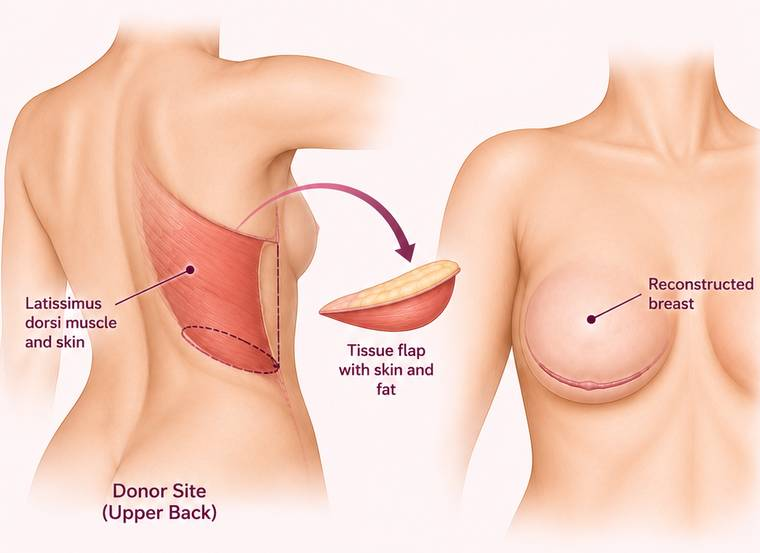
Uses skin, fat and muscle from the upper back, tunneled through the armpit to the chest while staying attached to its own blood supply — this is called a pedicled flap, so the vessels don't need reconnecting. An implant or expander is usually placed behind it to reach the size wanted. The ASPS notes it is often chosen after radiation, because it brings healthy skin and new blood supply to the treated area. It is the one flap here that moves a working muscle, so ask your surgeon what to expect for shoulder and back function.
Sources: American Society of Plastic Surgeons; National Cancer Institute; American Cancer Society.
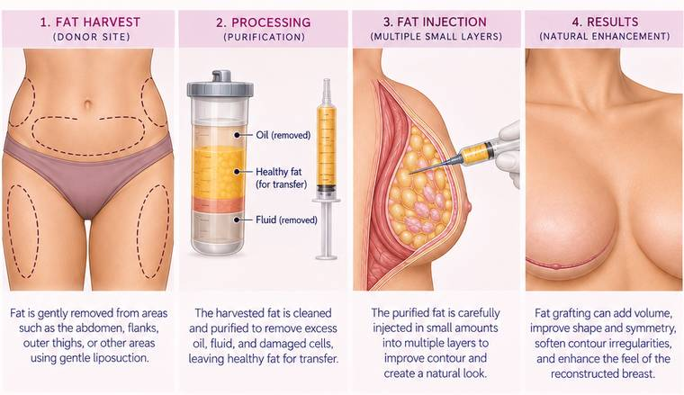
Fat is taken from elsewhere by gentle liposuction, purified, and injected in small amounts to smooth contours and improve shape. Several sessions are often needed, because some of the transferred fat is reabsorbed naturally.
Sources: National Cancer Institute; American Cancer Society.
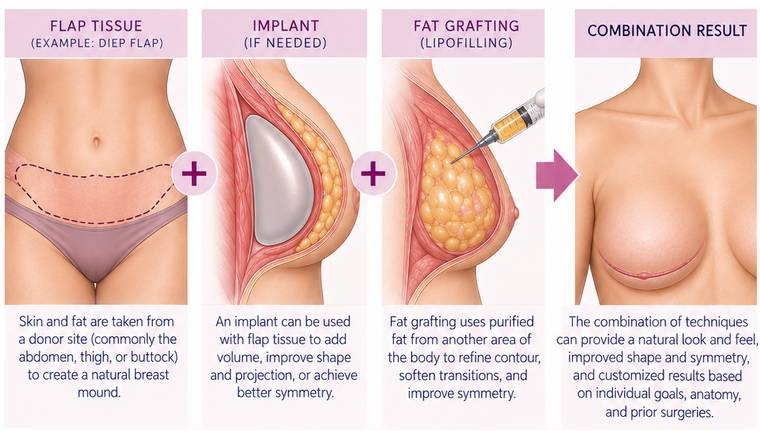
More than one technique used together — for example flap tissue plus an implant, or a flap refined later with fat grafting. Tailored to your anatomy, goals, and any previous surgery.
Sources: American Society of Plastic Surgeons; National Cancer Institute; American Cancer Society.
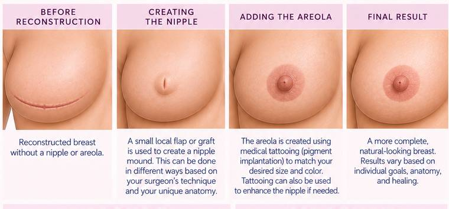
Usually the last step, once the chest has healed and the breast mound has settled into position. A nipple can be built surgically, by lifting and shaping small pieces of skin from the reconstructed breast itself; the areola is then added a few months later, most often with tattoo ink, occasionally with a skin graft taken from the groin or abdomen. Or the whole thing can be done by a tattoo artist who specialises in 3-D nipple tattooing — flat to the touch, but convincingly real to look at. Worth knowing too: for some people a nipple-sparing mastectomy, which keeps the original nipple and areola, is possible. Whether it is depends on the size and position of the cancer and on the shape of the breast.
Sources: National Cancer Institute; American Cancer Society.
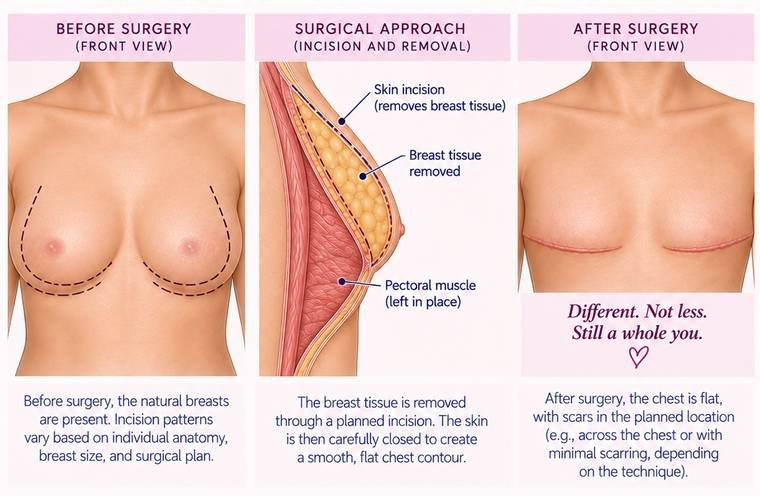
Also called aesthetic flat closure. The breast tissue is removed, then excess skin and fat are taken away and what remains is tightened and contoured so the chest wall lies smooth and flat. It is an operation in its own right: simply declining reconstruction after a mastectomy does not produce a flat closure, which is worth asking about directly. It is also an option for people having implants removed. A deliberate choice, not an absence of one.
Sources: National Cancer Institute; American Cancer Society.
Self-checks help you notice change. Mammograms find cancers too small to feel. They do different jobs, and you want both.
Two major bodies publish screening guidance for women at average risk, and they don't fully agree. Neither is wrong — they weigh the same evidence differently. Here is what each says, so you can talk it through with your own doctor.
Two things worth knowing. Insurance coverage in the US is usually tied to the Task Force's recommendations rather than the ACS guideline. And if you are at high risk — a strong family history, a known gene change, or chest radiation when you were young — the advice is different again: usually an MRI and a mammogram every year, often starting at 30. Ask your doctor which group you're in.
After a mastectomy, screening changes. A reconstructed breast is not usually given mammograms; the chest is checked by physical examination instead. If you still have your other breast, it carries on being screened as normal. Knowing what is normal for your chest wall matters just as much after surgery as before it — new lumps, thickening or skin changes are still worth a call.
The ACS does not recommend clinical breast exams as a screening test for women at average risk. That isn't a reason to skip appointments — it's a reason not to rely on them instead of a mammogram.
Sources: American Cancer Society; U.S. Preventive Services Task Force.
Take this with you. You are allowed to ask all of it, and a good surgeon will be glad you did.
Two more worth adding, from the pages in this site: will I need more than one operation, and how many of this particular procedure do you do each year?
Adapted from the American Society of Plastic Surgeons consultation checklist.
Everyone has breast tissue. Breast cancer in men is uncommon, but it is not rare enough to ignore — and it is too often found late.
The most common sign is a painless lump or thickening in the breast, chest or underarm. It may be tender but usually isn't. Any change to the chest or nipple is worth checking — dimpling or puckering of the skin, redness or scaling, a nipple turning inward, or discharge.
Most men diagnosed have no known risk factor beyond getting older. That's exactly why the advice is the same as it is for women: know what's normal for you, and get a change looked at rather than waiting to see if it settles.
Sources: American Cancer Society; ACS risk factors.
Free, real people, and no diagnosis needed to call. If cost or access is the thing standing in your way, start here.
If your insurance covers mastectomy, it has to cover reconstruction. The Women's Health and Cancer Rights Act of 1998 requires group health plans and insurers that pay for mastectomy to also pay for reconstruction — every stage of it, surgery on the other breast to match, breast prostheses, and treatment for complications including lymphedema. Some plans run by religious organizations and some government plans are exempt, and the law does not apply to Medicare or Medicaid, though Medicare often covers reconstruction anyway and Medicaid varies by state. If you are told reconstruction is not covered, it is worth asking again with this law by name.
Say it out loud when you call. Cost and transport are among the most common reasons people delay screening, and every organization here exists partly to remove that barrier. Asking is normal.
Phone numbers, hours and eligibility verified against each organization's own site. Programs and funding do change — if you find something out of date, please tell us so we can fix it.
Hi, I’m Nicky, the creator of Foobs On The Loose and the slightly unhinged mind behind Foobie. 💗
I’ve spent nearly 30 years working in healthcare, but nothing really prepares you for becoming the patient.
Breast health has been personal to me for a long time. My mom is a three-time cancer survivor who was first diagnosed with breast cancer at just 42 years old. Her journey included multiple complications and a failed reconstruction, and at the time, remaining flat was her only option. She now wears prosthetics as a flattie. Watching her go through all of that shaped the way I understood cancer, early detection, advocacy, and the importance of paying attention to your body long before I ever had a breast health journey of my own.
After being diagnosed with atypical lobular hyperplasia (ALH) and a PASH tumor, I made the very personal decision to have a prophylactic bilateral mastectomy in 2023.
What I expected to be a difficult but fairly straightforward reconstruction became a much longer journey. I dealt with flap necrosis, a rare infection, months of antibiotics, multiple surgeries, setbacks, scars, and a whole lot of tears and fear along the way.
Through all of it, I was incredibly lucky to have an amazing surgeon beside me. Her skill, honesty, patience, and support made an enormous difference during some of the hardest parts of my journey.
I created Foobs On The Loose because I wanted breast health education to feel a little more human.
There is plenty of serious information out there, but sometimes it is buried in medical language, fear, or sterile pamphlets that do not really prepare you for the reality of being the person living through it.
This page is about knowing your body, understanding your options, asking questions, advocating for yourself, and feeling less alone in the process.
A big part of that is Feel It on the First, my monthly reminder to know your normal so you are more likely to notice when something changes.
There will always be serious conversations here because breast health is serious. But there will also be humor, honesty, a little sass, and room to talk about the parts of the journey that are awkward, frustrating, ridiculous, or just plain hard.
Foobie was born during my reconstruction complications and quickly became the loud little voice of this page.
She’s scarred.
She’s reconstructed.
She’s occasionally censored by social media.
She has absolutely no intention of behaving.
And I wouldn’t have her any other way.
She started as humor during a time when I desperately needed some, but she grew into something much bigger. Foobie represents the messy, funny, frustrating, empowering parts of breast surgery, reconstruction, body image, and healing that do not always make it into the medical pamphlets.
Together, we’re here to educate, empower, support, and remind you to know your body and use your voice.
Different bodies. Different choices. Different journeys.
All real. 💗
Foobie is loose on both Instagram and Facebook, and she has no intention of behaving: your monthly nudge, real talk, the ridiculous bits nobody warns you about, and a community that's got your back (and front). Much the same on both — follow whichever one you actually open.